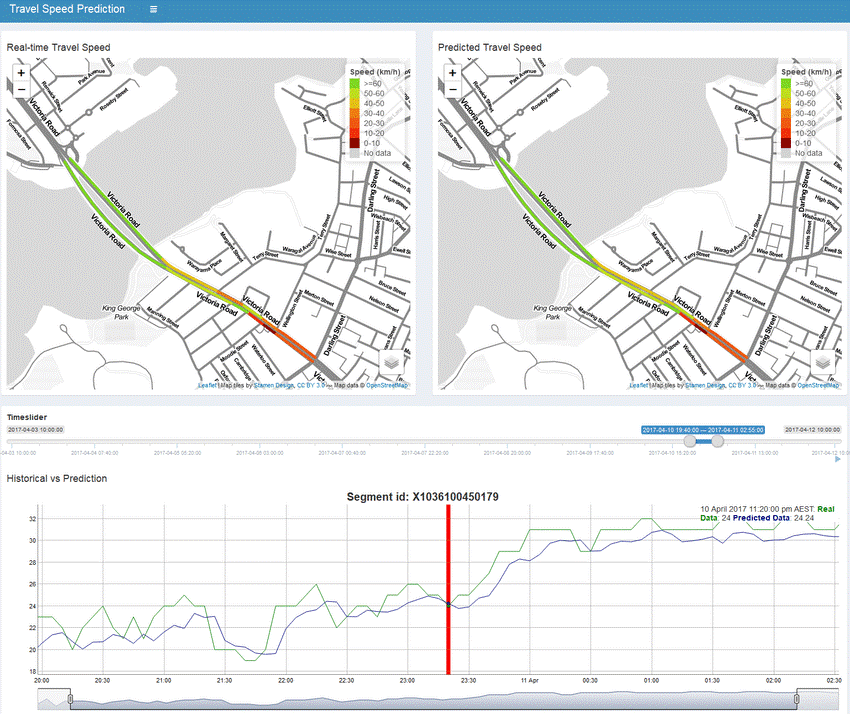
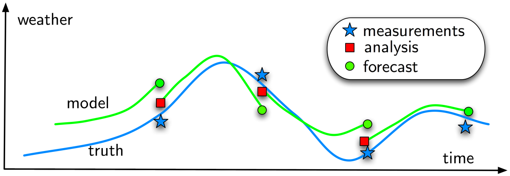
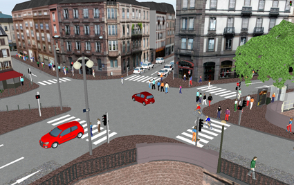
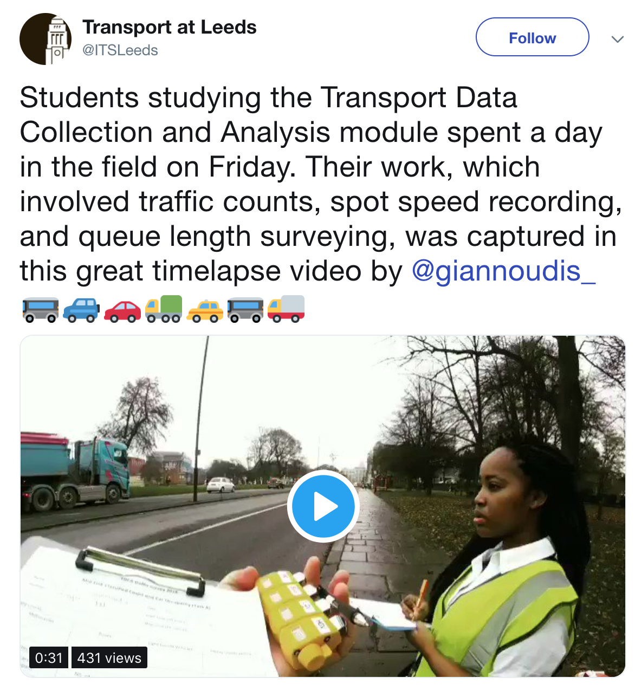

Part 4 projects: bringing together machine learning and city simulation
Minh Kieu
Transport Research Centre, University of Auckland
These slides:
https://leminhkieu.github.io/p/2019-Part4-Projects.html

About me
- PhD from Queensland University of Technology, Australia (2015)
- 2016-2018: Research Scientist at CSIRO, Australia
- 2018-2019: Research Fellow at the University of Leeds
- From 2020: Lecturer at the Transport Research Centre, University of Auckland
Urban Flow Data: Google Travel time
Urban Flow Data: Smart Card data

Urban Flow Data: Summary
Difficulties
Skewness
Prolific users distort patterns
Spatial accuracy
Missing data
Bias
E.g. Choose a number between 1, 2, 3 and 4
Complicated!!
Messy, and "too big for Excel"
Benefits
Volume
Potential for large sub-samples
Velocity
Streaming / regularly updated
Potential for dynamic models
Need to consolidate diverse sources
Solution: Agent-Based Modelling ?
Uncertainty
The reality is dynamic: Non-linear models predict near future well, but diverge over time.
The reality is stochastic: No set of parameters would perfectly explain the real system.
There is no systematic mechanism to incorporate new data into agent-based models
1. Data Assimilation for Agent-Based Models: 5-years ERC Horizon 2020 project -- Research Team Leader
Improve estimates of the true system state by combining noisy, real-world observations and model estimates of the system state
Bus Simulation
Bus Simulation with a Particle Filter
Computationally expensive
MATSIM Singapore takes 2 days to implement on a cluster of 4 supercomputers
2. Dynamic Emulators of Agent-Based Models: Funding proposal due by October 2019 -- Principal Investigator
Crowd Simulation
Emulation results
Making impacts with a pilot study
Clean Air Charging Zone in Leeds
3. Urban Transport Modelling for Sustainable Well-being in Hanoi: Proposal submitted to the Bristish Academy -- Co-Investigator
4. Impacts of future transport modes on health -- Collaborative research
The impacts of Autonomous Vehicles on human health is currently unknown
We need to model population demographics, activities, behaviors, and mobility in order to properly understand how Autonomous Vehicles affects health.
5. Smart Urban Transport Systems Management using Big Data -- Key researcher
Large 5-year proposal for funding from the MBIE, led by University of Canterbury
Improve the design and operations of transport systems by utilising the data and technology under connected environment.
How do my research fit to the role?
My fit to the role: Research
My views of what the Transportation Engineering programme should look like.
1. Principles of Transport Modelling and Simulation.
What can be made to improve the transport systems?
Understand the 4-step demand modelling
Knowing different types of traffic simulation and when to use each
Lab session on traffic simulation
2. Transport Data Collection and Analytics.
How do we solve traffic problems using data science?
Familiar with tools for data science
Programming for data science: Python, R
Field session on data collection
Lab session on storing, cleansing, analysing and visualisation of the collected data
3. Machine Learning and Artificial Intelligence for Transportation.
What is an effective Machine Learning approach look like for a transport problem?
Understand different algorithms in Machine Learning.
How to effectively implement them in Python or R.
What are the common applications of Machine Learning/AI for Transportation problems
Project-based learning to solve transport problems with Machine Learning.
Other modules
Public Transport Planning and Management
Road and Traffic Safety Audit
Future Transport Systems and Mobilities
Integration between Undergraduate and Postgraduate Transport Studies
- Transport-related modules from the 2nd year until the end of the Master Program
- Develop skills for deep transport knowledge in year 3 (programming, optimisation, etc), plus some transport modules
- Deeper and more complicated transport modules in the Master program
Conclusion
Teaching: Civil Engineering and Transportation Background
Research: Focus on Machine Learning and City Simulation:
Funding: $450,000 in funding as PI
Project management: Experience with large research projects
Services: Rich admin and leadership experience